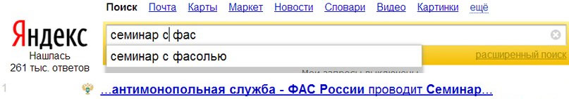

семинары по госзаказу - афера?
Основные приёмчики шарлатанов:Постоянно пытаются продать какие-то страшные и грандиозные изменения в законодательстве, даже "раскрутили" целый "новый" "140-фз", когда на самом деле, все июньские поправки можно сформулировать в два предложения.
Курсы "от университетов" в названиях которых очень много пафосных слов типа "управление, финансы и менеджмент".
И что вы думаете? Седой профессор, знаток латыни и Римского права прочитал 44-фз (принятый около года назад) и сейчас расскажет вам все секреты?
Это стандартная халтурка для ректоров этих самых "вузов". Выполнять которую нанимают "специалиста с площадки", а деньги за неё получает получает не вуз, а левая ООО-шечка. От вуза там только кривая печать и помещение, которые активно монетизируют, "обучая" всему, что не приколочено, от йоги до создания сайтов. Такие вот нехитрые "финансы и менеджмент".
Единственное условно-государственное место, это легендарные курсы от Академии Народного хозяйства (РАНХиГС). Для прохождения которых человек должен выпасть из жизни на месяц, приехать в москву или спб и отсидеть 144 часа.
Рекомендую всем кто хочет прокатиться в столицу за счёт работодателя и при этом умеет спать сидя за партой с открытыми глазами.
К практическим умениям эта студенческая романтика не имеет никакого отношения. Как сказала одна моя знакомая сотрудница муниципалитета: "Один раз даже было интересно". Говорят, разрешают играться с телефонами всё занятие.
Занятия, проводимые якобы от имени и при поддержке каких-то государственных фондов, комитетов и департаментов.
В большинстве случае это обычное враньё. А если правда - то конечно нужно идти - вдруг чиновники сами про себя расскажут, как это им удаётся принимать настолько кривые законы.

Площадки, специалисты с площадки, какие-то их агенты, партнёры и ассоциации.
Что делает площадка? Тупо хранит документы на сервере, а деньги в банке, более ничего.
Кстати, удостоверяющие центры (как это ни удивительно) только выдают Э-Пе-шечки.
Кондуктор, продающий билетики, не имеет никакого морального права обучать вождению автобуса.
Но указанных выше товарищей это не смущает, одна площадка продаёт 120 часовой !!! обучающий курс (за 15 тысяч). Учитывая, что мне этого времени хватает на подготовку пол-сотни человек индивидуально, иначе как продажей воздуха это не назвать.
Удостоверяющий центр, широко известный своими комически-нудными лекторами, впаривает "вэбинары" (за 6 тысяч ) после которых уже три (!) их клиента обращались ко мне за переподготовкой, пожаловавшись на запредельное количество воды в голове.
Полюбуйтесь на красавчика:
Подавляющее число таких "обучателей" никогда не работали “в поле”. Ими не заключено ни одного контракта, не говоря о том, что их не отклоняли по-беспределу, не наезжали силовики, не пытались развести мошенники.
В лучшем случае преподы советского образца скучно читают занудные тексты. А в худшем - дезинформируют людей.
Ещё один "хит продаж" это возможность "погонять" на тренажёре, имитирующим действия на площадке (сбербанк-аст). Смешно и печально.
Смешно, потому что возможность по-нажимать кнопочки на площадке итак есть у всех за бесплатно.
Печально, так как из-за того, что у существенной части населения есть проблемы с компьютерной грамотностью, создалось трагическое искажение восприятия, будто бы их основная проблема по-жизни - это нахождение нужных кнопок в "этих сложных компьютерах и интернетах".
Меж тем компьютеры и площадки это всего лишь инструмент, кондуктор в автобусе. Он не может решить за вас куда вам ехать и как, и даже остановки не всегда объявляет правильно, потому что итак получит свои деньги.
Глобальная проблема существенной части населения в неумении мыслить задачами, а не инструментами. Знают ли об этой концепции "обучатели"? - вопрос риторический.
Даже если вам повезёт с лектором, нельзя просто так взять и усвоить огромное количество информации за несколько часов.
Всё, что не было попробовано и закреплено на практике - мгновенно выветривается из головы.
Помните ли вы что-то из университетской программы? А может из новостей недельной давности?
Как себя чувствуют за рубежом люди, учившие язык в советских школах?
Можете ли вы себе представить теоретически семинар по забиванию гвоздей? плаванию? езде на велосипеде?
Именно поэтому я веду обучение методом практического сопровождения, где в каждый момент рассказывается то, что необходимо клиенту.
Ну и конечно, всеми любимые:
свидетельства и сертификаты установленного образца.
Все знают как выглядят авто-права, загранпаспорт, диплом о высшем образовании, но никто не знает как должно выглядеть это самое ... установленного образца.
Нет никакого образца.
Юридическую силу могут иметь только те документы об образовании, за которым закреплён (государственный) стандарт экзамена.
Например гос.стандарт экзамена в вузе по английскому языку никого из работодателей (в здравом уме) не устраивает. Поэтому востребованы коммерческие стандарты TOEFL, IELTS итп.
Гос.стандарт экзамена на вождение регулярно пересматривается, из-за этого они (как правило) становятся сложнее.
Для госзаказа вообще никаких стандартов не существует.
Естественно, среди многообразия "курсов" есть и те, которые имитируют экзамен и пишут о "прохождении аттестации", но не дать бумажку человеку, заплатившему немалые деньги, они по понятным причинам не могут.
Недавно ко мне обратились двое молодых людей, которых работодатель отправил на недельные курсы "при университете", заплатив по 20 тысяч за каждого. В лучшем студенческом стиле, прогуляв занятия полностью, они тем не менее “сдали” “экзамен”, проконсультировавшись у меня.
В остальных случаях выдаваемые на этот счёт "документы" имеют запись "о прослушивании курсов", "об участии в семинаре" итп.
Благодаря МинЭкономРазвития, которое выпустило гениальные "методические рекомендации" в которых не сказано как учить и чему, но зато на каждую тему "рекомендовали" отводить час, а то и два, повсеместно в наши любимые бумажки с печатями вписывают количество часов, которое якобы отсидел на-кресле-ровно "выпускник".
Причём число это абсурдно. При правильном подходе за 144 часа выполяняется не обучение, а вся работа среднего контрактного управляющего за год.
Каким бы пафосным ни было название обучающей конторы, сколько бы раз в нём не повторялись священные слова "государственный, сбербанк, квалификация..." выдавать эти, ничего не значащие, бумажки, имеет право кто угодно.
Определять их статус работодатель будет “на глазок”.